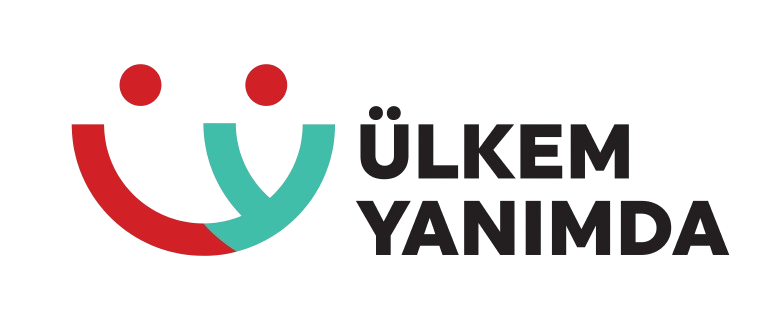

Öğretmen Seminer Kaynakları ve Eğitim Materyalleri
Yurt dışındaki Türk soylu çocuklarımız için kaliteli eğitim kaynakları
26-29 Ağustos 2025 Yurt Dışında Yaşayan İki Dilli Türk Çocuklarına Türkçe Öğretim Seminerinde Kullanılan araç ve kaynakların linkleri
Tıkla ve göz at →Bu videoda, yapay zekâ kullanarak metinleri hızlı ve etkili bir şekilde biçimlendirme yöntemlerini gösteriyorum. Ayrıca, oluşturduğunuz metinleri Moodle'e HTML formatında ekleyerek ders içeriklerinizi daha etkileşimli hâle getirebilirsiniz.
Videoyu İzle →Bu videoda, bir videodaki içerikten yapay zekâ kullanarak hızlıca sorular üretme sürecini adım adım gösteriyorum. Ürettiğimiz sorular, Moodle XML formatında hazırlandığı için doğrudan Moodle gibi e-öğrenme platformlarına aktarılabilir.
Videoyu İzle →Bu videoda, Ulkem Yanımda platformu için hazırladığım eğitici oyunu adım adım nasıl geliştirdiğimi ve oyunu SCORM formatına dönüştürerek e-öğrenme sistemlerine nasıl entegre edebileceğinizi gösteriyorum.
Videoyu İzle →Kendi kişisel web sitenizi yapmak için yazılımcı olmanıza gerek yok! Bu videoda, yalnızca CV'nizi ve profil fotoğrafınızı kullanarak GitHub ve Claude.ai yardımıyla nasıl modern bir kişisel web sitesi oluşturabileceğinizi adım adım gösteriyorum.
Videoyu İzle →Microsoft Teams'de öğrencileriniz için etkileşimli anketler oluşturmayı öğrenin. Sınıf katılımını artırın ve geri bildirim alın.
Videoyu İzle →Beyaz tahta kullanımı, ekran paylaşımı ve etkileşimli araçlarla Microsoft Teams'de profesyonel ders anlatımı teknikleri.
Videoyu İzle →Microsoft Teams'de haftalık ders programları oluşturma ve Ülkem Yanımda platformuna entegre etme rehberi.
Videoyu İzle →Ülkem Yanımda projesi kapsamında öğretmenler için Microsoft Teams kurulum ve ilk ayarları tamamlama rehberi.
Videoyu İzle →Moodle üzerinde anket oluşturma, farklı anket tiplerini seçme ve öğrenci yanıtlarını raporlama sürecini adım adım öğrenin.
Videoyu İzle →Hızlı ve basit mini anketler hazırlayarak öğrencilerden geri bildirim toplayın ve derslerinize etkileşim katın.
Videoyu İzle →Moodle'da soru bankasından soru seçerek, filtreleyerek ve rastgele sorular ekleyerek hızlıca sınav oluşturun.
Videoyu İzle →PDF dosyasındaki soruları hızlıca Moodle'a aktarma, çoktan seçmeli ve doğru/yanlış sorular ekleme yöntemlerini öğrenin.
Videoyu İzle →Moodle sistemine dışarıdan Aiken formatı kullanarak toplu soru ekleme sürecini adım adım öğrenin.
Videoyu İzle →Okuma yazma bilmeyen küçük yaş grubu öğrenciler için sesli sorular oluşturarak etkileşimli değerlendirmeler yapın.
Videoyu İzle →Moodle'da bireysel öğrencilere veya gruplara özel ödevler tanımlama ve kişiselleştirilmiş görevler oluşturma rehberi.
Videoyu İzle →Öğrencilerin Moodle'a ödev yükleme, dosya ekleme, teslim etme ve gönderilen ödevi kontrol etme sürecini öğrenin.
Videoyu İzle →Moodle'da öğretmenler için ödev ekleme, ayarları düzenleme ve teslim tarihlerini belirleme sürecini öğrenin.
Videoyu İzle →Moodle'da öğretmenlerin ödev oluşturma ve yönetme, öğrencilerin ödev yükleme ve teslim işlemlerinin kapsamlı rehberi.
Videoyu İzle →Moodle üzerinde öğrencilerinize toplu mesaj gönderme, duyuru yapma ve hızlı iletişim kurma yöntemlerini öğrenin.
Videoyu İzle →Moodle platformunda sözlük etkinliği oluşturarak öğrencilerinizle ortak bir kelime hazinesi oluşturma rehberi.
Videoyu İzle →Moodle'da öğrencilerin yoklamasını otomatik olarak alma, girişleri takip etme ve ders yönetimini kolaylaştırma yöntemleri.
Videoyu İzle →Moodle'a interaktif SCORM paketleri ekleme, yapılandırma ve raporlarını görüntüleme sürecini adım adım öğrenin.
Videoyu İzle →Hiçbir teknik bilgi olmadan HTML sayfasını SCORM'a dönüştürme ve ücretsiz araçlarla SCORM paketi oluşturma rehberi.
Videoyu İzle →Hazır SCORM formatındaki e-kitapları indirme ve Moodle platformuna entegre etme sürecini öğrenin.
Videoyu İzle →Wordwall gibi interaktif eğitim uygulamalarını SCORM paketi haline getiren yeni araçları keşfedin ve kullanmayı öğrenin.
Videoyu İzle →Moodle'a YouTube videolarını link ekleme ve iframe kullanarak SCORM paketi formatında entegre etme yöntemleri.
Videoyu İzle →Moodle'da Zoom, Microsoft Teams ve diğer platformlar için sabit ders bağlantıları ekleme ve yönetme rehberi.
Videoyu İzle →Canva ile profesyonel tasarımlar oluşturmayı öğrenin. Eğitim materyalleri, posterler ve dijital içerikler hazırlamak için kapsamlı bir rehber.
Eğitime Başla →1 saatte HTML'in temellerini öğrenin. Web sayfası oluşturma, etiketler ve temel yapıları kavramak için mükemmel bir başlangıç.
Videoyu İzle →Python öğrenmek isteyenlere, yazılım öğrenmek ve Python'a yeni başlayanlar ve başlangıç yapmak isteyenler için başlangıç dersleri tadında 1 Saatlik komple bir Python Giriş kursu!
Videoyu İzle →Windows'ta unzip yapıp çalıştırabileceğiniz basit bir Moodle kurulum rehberi ile hızla başlayın.
Videoyu İzle →Moodle 4.5'te CSV dosyası kullanarak toplu kullanıcı yükleme işlemini kolayca öğrenin ve eğitim yönetiminizi verimli hale getirin.
Videoyu İzle →Moodle 4.5'te birçok dersi tek seferde ekleme, organize etme ve platforma entegre etme yöntemlerini öğrenin.
Videoyu İzle →
Bu videoda, çevrim içi toplantılarınızda sohbet bölümünü nasıl kapatabileceğinizi adım adım anlatıyoruz. Öğrencilerin dikkatini derse toplamak ve bildirimlerden kaynaklanan dikkati dağıtıcı unsurları ortadan kaldırmak için basit ama etkili bir yöntem öğreneceksiniz.
Videoyu İzle →Yeni seminer materyalleri ve eğitim kaynakları düzenli olarak eklenmektedir. Güncellemeleri kaçırmamak için siteyi favorilerinize ekleyin.